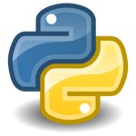
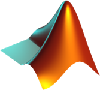
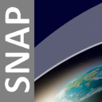
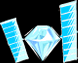

I am a PhD Research Scholar in the Department of Remote Sensing at Bharathidasan University, Tiruchirappalli. My doctoral research applies satellite geodesy and Earth-observation methods to basin-scale hydrology — integrating GRACE / GRACE-FO satellite gravimetry, GLDAS land-surface modelling, and in-situ records to characterise spatiotemporal groundwater storage variability across the east-flowing river basins of peninsular India. I also work on synthetic aperture radar (SAR) polarimetry and large-scale geospatial analysis on Google Earth Engine, including Last Glacial Maximum palaeo-shoreline reconstruction from ETOPO / GEBCO bathymetry. My background in geomorphology, basin analysis, and tectono-geomorphic evolution underpins my approach to source-to-sink and Earth-surface-process questions.
Research interests: Satellite gravimetry (GRACE/GRACE-FO) | Basin-scale hydrology & GLDAS modelling | SAR polarimetry | Google Earth Engine | Geomorphology & source-to-sink systems
Institute: Bharathidasan University, Tiruchirappalli, India.
Institute: Bharathidasan University, Tiruchirappalli, India
Research focus: Spatiotemporal groundwater storage anomalies in east-flowing river basins using GRACE/GRACE-FO and GLDAS.
Institute: Periyar University, Salem, India
Dissertation: Geomorphic and Tectonic Influences on the Longitudinal and Cross Profiles of the Northern Thamirabarani River Basin, Southern India.
Institute: Government Arts College (Autonomous), Coimbatore, India
Project: Petrology of Punjai Puliyampatti, Coimbatore District, Tamil Nadu.
Periyar University
Birbal Sahni Institute of Palaeosciences
NLC India Ltd., Tamil Nadu

Python
R
JavaScript

MATLAB
Git
Google Earth Engine
QGIS
ArcGIS Pro

ESA SNAP

polsartools / PolSARpro
SQL · Jupyter / Google Colab · Adobe Illustrator · Linux
| Award / Honour | Description | Year |
|---|---|---|
| DG NCC Commendation Card | Awarded by the Ministry of Defence on Indian Army Day for outstanding performance in the National Cadet Corps. | 15 Jan 2023 |
| Silver Medal — Rifle Shooting | 50 m .22 Open-Sight Rifle Shooting, Inter-Group Shooting Competition, NCC GP HQ Puducherry (TN, P&AN Dte). | 2021 |
| Inter-DTE Shooting Championship | Represented at the Inter-Directorate Sports Shooting Championship, Indore, Madhya Pradesh. | 2021 |
| NCC 'C' & 'B' Certificates | NCC 'C' Certificate (Grade A) and NCC 'B' Certificate (Grade A), National Cadet Corps. | 2021 - 2023 |
Spatiotemporal groundwater storage variability across east-flowing river basins of peninsular India (2003–2024), integrating GRACE/GRACE-FO, GLDAS, and in-situ well data.
Reconstructing the Last Glacial Maximum shoreline by extracting the −120 to −130 m isobath from ETOPO1 / GEBCO bathymetry on Google Earth Engine.
Longitudinal and cross-profile analysis, knickpoint mapping, and DEM-based morphometrics to read tectonic and lithological controls on drainage evolution.
Kavin, T. S., et al. (2025). Geochemical signatures and petrogenesis of intraplate dolerite dykes in the Salem block, Southern Granulite Terrane, India. Acta Geochimica. doi: 10.1007/s11631-025-00830-6
Tectono-Geomorphic Evolution of River Profiles in the Thamirabarani River Basin. Aspiring Geologists' Extravaganza '25, Anna University.
Geomorphic and Tectonic Influences on the Longitudinal and Cross Profiles of the Thamirabarani River Basin, Southern India. National Conference, Central University of Tamil Nadu.
Enhancing Coastal Ecosystems Through LULC and Sediment Management for Climate Resilience and Biodiversity. VIKSIT Bharat @2047 (ISSC-E3).
Utilizing Mineral Carbonation for CO₂ Sequestration to Combat Climate Change. VIKSIT Bharat @2047 (ISSC-E3).
A Bibliometric Analysis of CCS Techniques, Applications and Regional Trends. International Conference on Subsurface Technology (ICSST–2024), Sep 2024.
Department of Remote Sensing, Bharathidasan University, Tiruchirappalli, Tamil Nadu, India
ResearchGate · ORCID · GitHub · LinkedIn
© 2026 Kavin T.S. · PhD Research Scholar, Remote Sensing